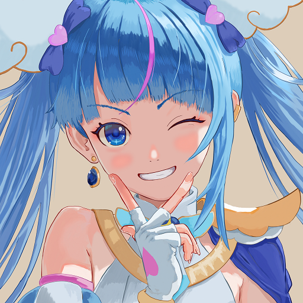

AN INTERACTIVE GUIDE TO NEURAL COMPRESSION
An image,
inside a network.
Three feature grids. One small neural network.
Local features at different scales and precisions reconstruct an image at roughly the size of BC7.
512 × 512 · Fitted to this image · Matched storage budget

BC7Our model01 / FOLLOW A PIXEL
The journey of a pixel.
Pick a point. Follow the features it reads,
through the network, all the way to a color.
Once loaded, select a node to inspect its values.
Tiles encode numbers, not RGB images. Darker hidden-layer tiles indicate larger absolute activations; hues distinguish positive and negative values.
Math and decoding details 41 → 80 → 80 → 80 → 3
Pixel coordinates use uv = ((x + 0.5) / 512, (y + 0.5) / 512). At each level, grid coordinates are uv × size − 0.5, with clamped boundaries. Gather four fine-grid nodes; interpolate the coarse and high-precision grids separately. Decode high-precision values as code / 65535, interpolate, then subtract 0.5 for the network input. They are not added directly to the output.
Position frequencies are 64, 128 and 256 cycles, each producing sin(x), sin(y), cos(x) and cos(y). Hidden layers compute h = sin(30 × (Wh + b)); the output layer maps linearly to RGB, then clamps to [0, 1].
The JavaScript decoder reads the actual model.bin. Floating-point accumulation differs slightly from the GPU; full-image metrics use the verified RGB8 reconstruction. Display resizing reconstructs the trained pixels before image resampling. Continuous reconstruction at arbitrary coordinates is not assumed.
Reference pixels are checked after loading.
02 / INSIDE THE FILE
What fits
inside 255 KiB?
About 91% of the space holds local features.
A small network translates them into color.
Packed data + descriptor
Both exclude the generic decoder. Packed size, GLSL source size and GPU memory usage are separate measurements.
False color shows quantized features, not a downscaled original.
03 / ENCODING THE IMAGE
How does an image
become a code?
Image fitting, quantization and integer-code search.
These steps determine how the model stores and reconstructs an image.
- 01Fit the source image
Initialize the high-precision grid from image block means, then train it with all other features and the network. Its final values need not remain base colors.
- 02Quantize and tune the decoder
Use 4-bit fine and coarse grids, a 16-bit local grid and 10-bit weights. Freeze the grids, then fine-tune the decoder.
- 03Choose better integer codes
Try adjacent 4-bit codes and multiple step sizes for high-precision codes. Later passes also search pairs of 4-bit channels, keeping improvements to the current objective.
q − 1qq + 1Candidate set illustration · The best choice depends on measured error
These are 15 measured passes after fine-tuning this model: 12 minimize floating-point error, then 3 minimize region-weighted RGB8 error. The chart consistently shows full-image RGB8 PSNR.
Starting point
These fixed before/after views follow the selected pixel. The slider changes the chart, not the crop images; intermediate-pass images are not shown.
04 / LOOK CLOSER
Let the details speak.
Three images. The same crop and magnification.
A better overall score does not mean every region is better.
Nearest-neighbor magnification preserves individual pixels. PSNR labels describe the full image.
Reconstruction error by region.
On this image, average error is lower than BC7 in edge, flat and other regions. For other pixels 2–8 pixels from an edge, error is higher than BC7: 0.758 versus 0.582. Regional averages and local details can be examined separately.
| Region | BC7 RMSE | Model RMSE |
|---|---|---|
| Edges · 20.84% | 3.429 | 2.137 |
| Flat · 11.95% | 0.304 | 0.116 |
| Other · 67.21% | 1.137 | 0.992 |
RMSE uses RGB values from 0 to 255. Lower is better.